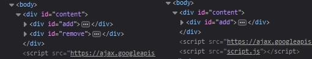

Il existe des méthodes permettant de modifier le DOM en ajoutant de nouveaux éléments, en copiant des éléments existants ou en supprimant des éléments.
jQuery permet l'ajout d'éléments dans le DOM grâce aux méthodes append() et prepend(). Elles prennent en paramètre le nouvel élément à ajouter.
append permet d'ajouter un élément en tant que dernier enfant de l'élément cible, prepend en tant que premier enfant.
See the Pen Untitled by OpenSpirit (@OpenSpirit) on CodePen.
Il est possible d'ajouter un élément déjà existant à un autre endroit de la page. Pour cela, il suffit de passer en paramètre un sélecteur à la méthode utilisée.
See the Pen Untitled by OpenSpirit (@OpenSpirit) on CodePen.
jQuery permet la suppression d'éléments dans le DOM grâce à la méthode remove(). Elle prend en paramètre optionnel un élément.
Les enfants de l'élément, ainsi que les événements et données associées, seront aussi supprimés.
See the Pen Untitled by OpenSpirit (@OpenSpirit) on CodePen.
La div avec l'id #remove a été supprimée du DOM, ainsi que ses éléments enfants.
Nous aurions aussi pu écrire : $('div').remove('#remove').